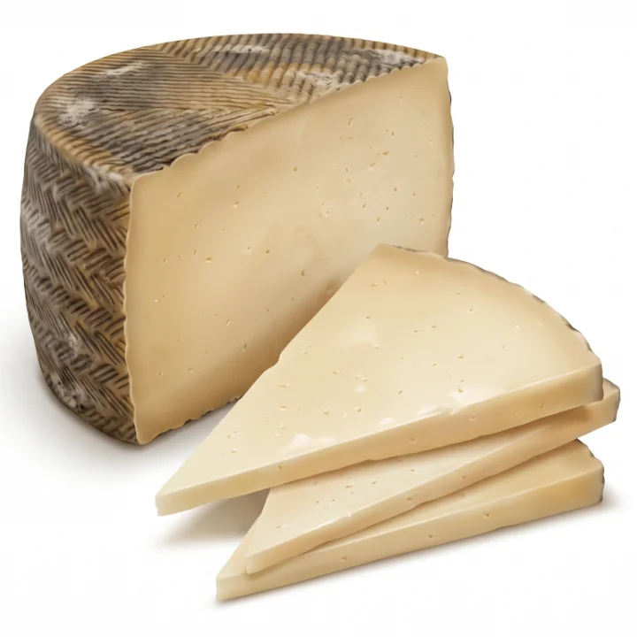

Manchego

Firm, buttery paste with frank flavours of sheep’s milk and dried hay.
- Milk: Sheep
- Family: Pressed, uncooked
- Origin: Castilla-La Mancha, Spain
- Best season: all year
Ripening
Ripened from 60 days to 2 years in moulds that print its plaited pattern.
What to serve it with
Quince paste (membrillo) and grapes